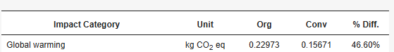

En l'article posa whereas conventional strawberries had higher soluble solids (8.5°Brix), proteins (0.9%).

Pero ChatGPT em comentat això:
.png)
Aquí observem que com ChatGPT dona informació, però que hi ha possibilitats que sigui errònia
He trobat diferents articles cientifics que estudian el meu tema i els trobareu a continuació en format APA7. APA7 es una forma d'escriure un article cientific
En l'article posa whereas conventional strawberries had higher soluble solids (8.5°Brix), proteins (0.9%).
Pero ChatGPT em comentat això:
Aquí observem que com ChatGPT dona informació, però que hi ha possibilitats que sigui errònia
En aquest articulo he trobat una frase interessant sobre quanta el percentatge de petjada de carboni té una maduixa. Aquesta és la frase: Organic strawberries generate 46% more carbon footprint than conventional strawberries. One of the main environmental impact contributors of organic production is the effect of transportation of compost, manure, and other organic inputs, which are required in large volumes per ha. The contribution of input delivery to total carbon footprint per ha of organic strawberry production is 33%, and for conventional strawberry production the contribution is 8%.
Alhora de preguntarli a ChatGPT dona aquesta informació:

És pot observar que ChatGPT no s'ha equivocat en aquest cas.